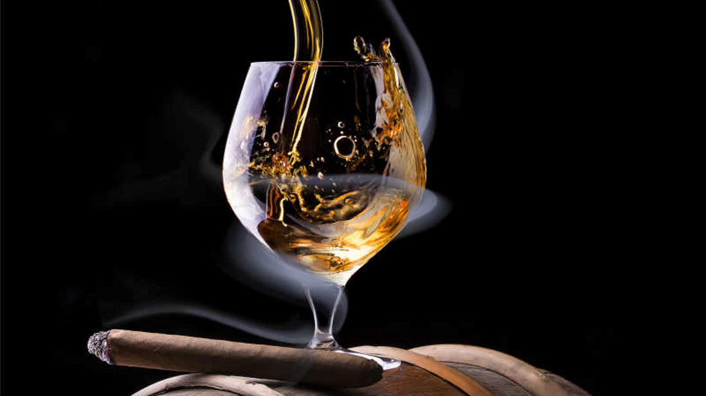

酒精：醉生梦死不知病
穴居人，挖出肠子的角斗士，黑死病，喝醉的乳母，白兰地注射剂
- 几千年来，人类为了自身的生存一直在不断地奋斗。我们的祖先要杀死足够多的猛犸象才能熬过一周，这样周末才有盼头。然后，在迷失于时间迷雾中的某个光荣的日子，一个新石器时代的穴居人碰巧在一个土罐中剩了一些浆果，并放了些日子。于是，酒精被发现了，人类突然之间有了一个在早晨起床的新理由。从那个好日子之后，酒精——确切地说是乙醇——在我们的食谱和药柜中成为重要一员。早期的人类除了注意到酒精对大脑造成的美妙影响之外，还发现，把酒精洒在伤口上能够有效杀菌，并且在你不得不缝合伤口时，能够起到轻微的麻醉作用。“小比利又被剑齿虎伤了？咱们拿点果子酒来。”没过多久，人类就发现，酒精还是一种非常好的溶解液，特别擅长从药草中萃取活性成分。于是，在悠悠的历史长河中，医药和酒精被联系在一起。
- 在人类发明出蒸馏法之前，葡萄酒就是医药调配过程中选择用的酒精。实际上，这也是唯一的选择。所以，古代的药方，从埃及到希腊再到罗马，全都推荐将药草浸在葡萄酒中，以增强疗效。而到了古罗马时，酿酒的艺术才真正臻于完美，并且开始极力宣扬其对健康的益处。抑郁？记忆有问题？感觉受挫？来来来，喝点酒。胃胀气？便秘？小便不利？腹泻？痛风？来来来，再喝点酒。被蛇咬了？有绦虫？咱们不醉不归.
- 到了15世纪，大多数的荷兰城镇都有了自己的蒸馏酒商，专门生产这种特别的酒精产品，这种酒被荷兰人称作金酒（Genever），后来渐渐有了琴酒（Gin）之名。尽管最初是为了药用，但琴酒因其口感和给意识带来的愉快冲击，很快获得了北欧人的喜爱。当琴酒传播到英国时，本来习惯喝兑水啤酒的英国工人阶级，很快喜欢上这种高度酒饮料。因而在18世纪初兴起了琴酒热，而因此丧命的人的数量多得令人难以置信。在此过程中，改良后的琴酒坚定地离开药柜，走入了酒铺。
- 在8世纪摩尔人踏足南欧之前，欧洲是一个只有葡萄酒和啤酒的地方。北非人除了让欧洲人重新接触到科学和数学，还带来了蒸馏的技艺。为了研发新药，摩尔人几乎把能找到的东西都蒸馏了一遍——其中就有他们在西班牙建立要塞时找到的当地葡萄酒。当你把葡萄酒蒸馏浓缩，你会得到一种高浓度的酒，今天我们称其为白兰地。当西班牙人收复伊比利亚半岛时，摩尔人将蒸馏作坊和这种新的酒精饮料的特色风味保留了下来。西班牙修道院保留了将酒蒸馏为白兰地的传统，开始将其出口到天主教世界的其他地区，包括梵蒂冈。在那里，教皇的医生将它当作一种延长寿命的药水列入处方。很快，白兰地凭借其自身魅力，成为一种保健饮品。
- 尽管啤酒在人类生活中的历史可能比红酒还要悠久，却从来没有享受过同样的医学声名。甚至是昔日的医生，似乎也认为其缺点大于优点。根据意大利锡耶纳的医生阿尔多布兰蒂诺在1256年的说法：无论它是用什么酿造的，燕麦、大麦还是小麦，那不好的气体都会伤害大脑和胃。因此，如果把啤酒和葡萄酒混在一起喝，很快就会喝醉。不过，它的确能促进小便的排泄，令人皮肤白皙光滑。啤酒有助于小便的排泄，这一点阿尔多布兰蒂诺说得非常对。不信可以问问那些在周五晚上带着焦急的眼神在商业区走来走去的人。